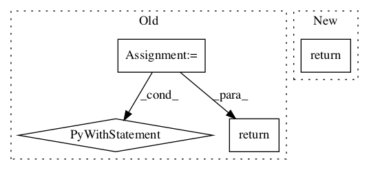

a281f8a17967302aa382881d5473b2993843fc6d,tf_agents/utils/tensor_normalizer.py,StreamingTensorNormalizer,_update_ops,#StreamingTensorNormalizer#Any#Any#,244
Before Change
tf.reduce_prod(
input_tensor=tf.gather(tf.shape(input=tensor), outer_dims)),
tf.float32)
mean_sum = tf.reduce_sum(input_tensor=tensor, axis=outer_dims)
var_sum = tf.reduce_sum(
input_tensor=tf.square(tensor - mean_estimate), axis=outer_dims)
// Ops to update streaming norm. Make sure that all stats are computed
// before updates are performed.
with tf.control_dependencies([num_samples, mean_sum, var_sum]):
update_ops = [
tf.compat.v1.assign_add(
self._count,
tf.ones_like(self._count) * num_samples,
name="update_count"),
tf.compat.v1.assign_add(
self._mean_sum, mean_sum, name="update_mean_sum"),
tf.compat.v1.assign_add(
self._var_sum, var_sum, name="update_var_sum"),
]
return update_ops
def _get_mean_var_estimates(self):
Returns this normalizer"s current estimates for mean & variance.
mean_estimate = nest.map_structure_up_to(After Change
self._var_sum)
all_update_ops = tf.nest.flatten(updates)
return all_update_ops
def _get_mean_var_estimates(self):
Returns this normalizer"s current estimates for mean & variance.
mean_estimate = nest.map_structure_up_to(In pattern: SUPERPATTERN
Frequency: 3
Non-data size: 4
Instances Project Name: tensorflow/agents
Commit Name: a281f8a17967302aa382881d5473b2993843fc6d
Time:
Author: null
File Name: tf_agents/utils/tensor_normalizer.py
Class Name: StreamingTensorNormalizer
Method Name: _update_ops
Project Name: NeuromorphicProcessorProject/snn_toolbox
Commit Name: 3523a61256c3040aa3f4fd3fc579511f85169212
Time:
Author: null
File Name: tests/conftest.py
Class Name:
Method Name: _config
Project Name: bethgelab/foolbox
Commit Name: 0420ce7b8c82b035592e0360d8fd98fb7320e62d
Time:
Author: null
File Name: tests/conftest.py
Class Name:
Method Name: tensorflow_simple_sequential_cpu